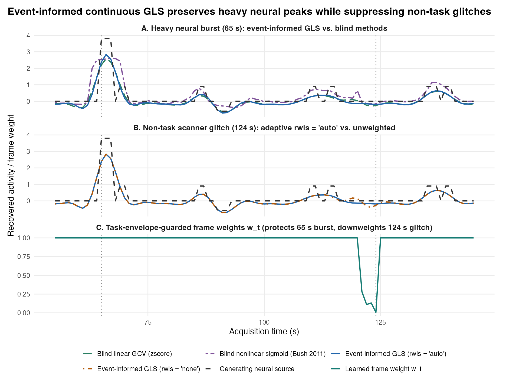
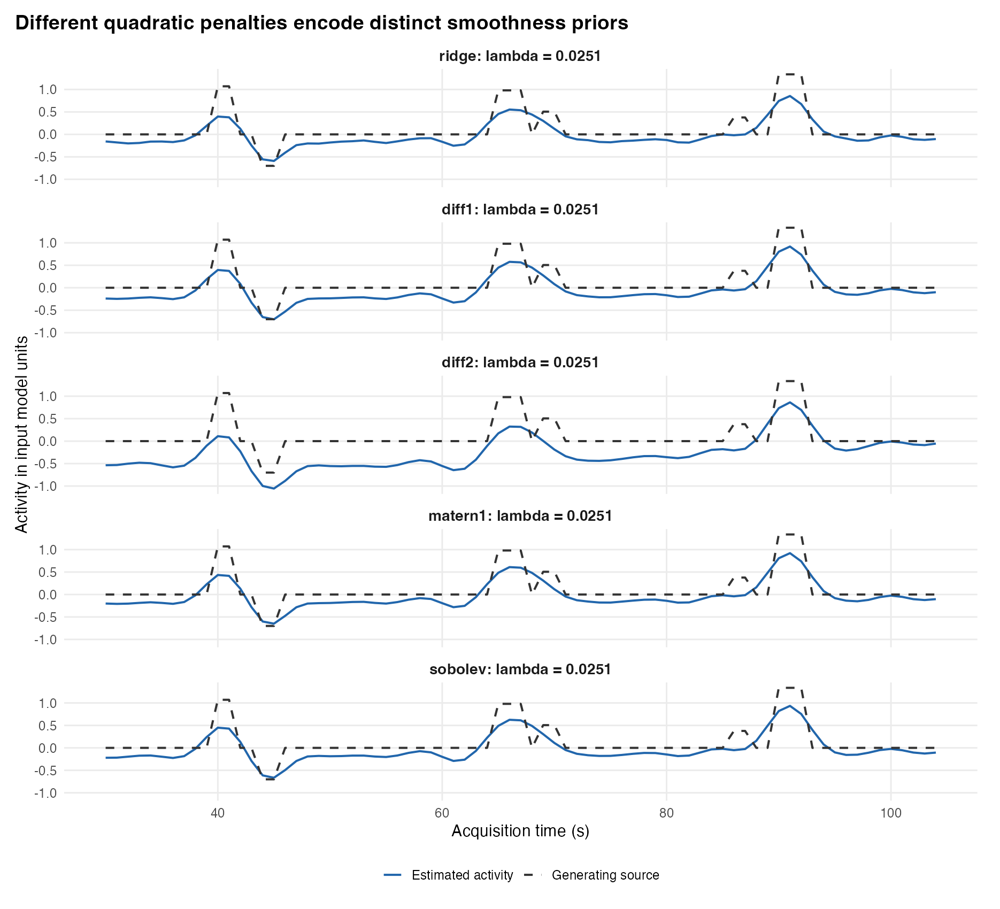
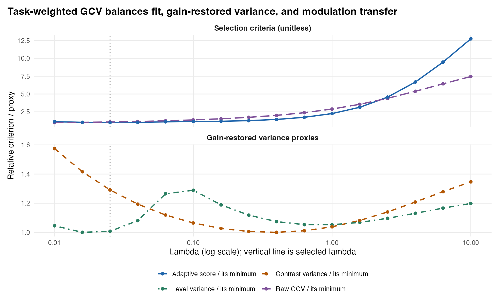
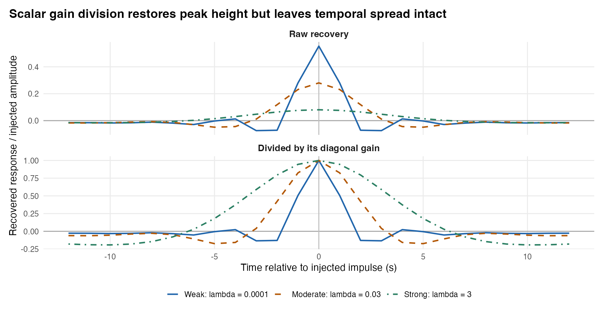
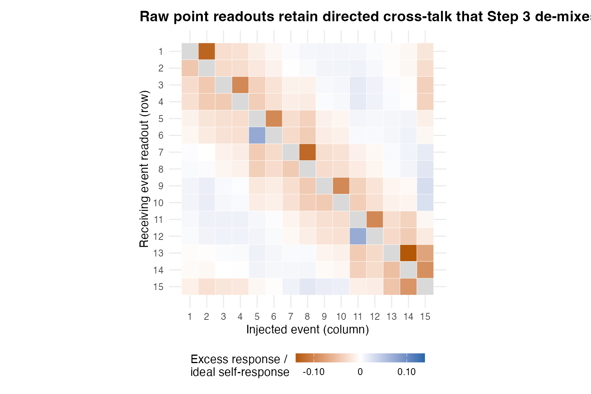
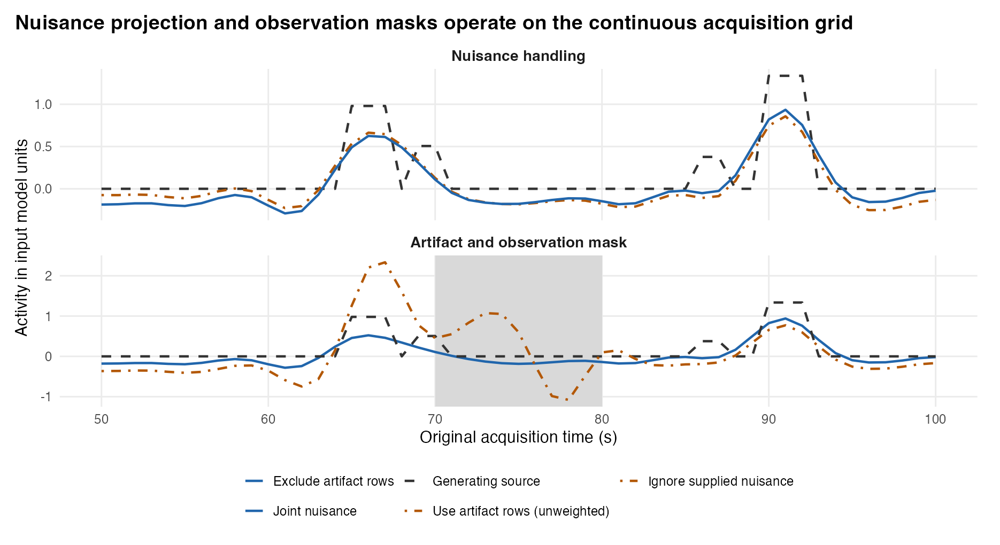
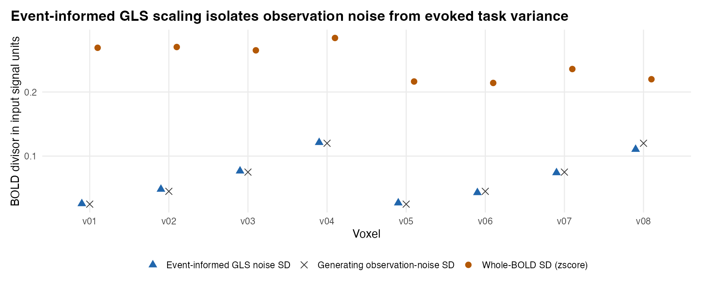
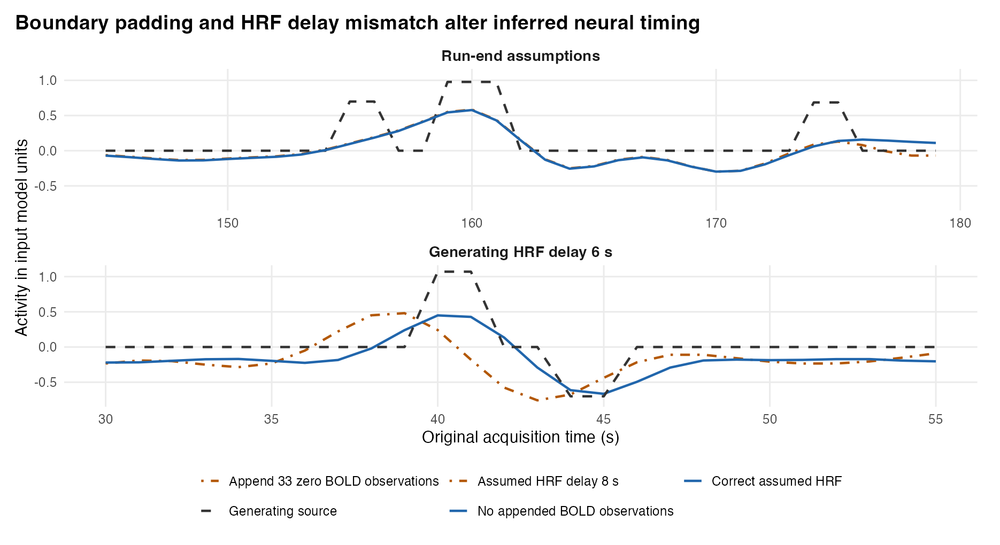

Reconstructing continuous latent neural activity via event-anchored GLS regularization
4.1 Overview
Once Step 1 has learned each run’s out-of-sample HRF and serial noise structure, Step 2 (deconvolve_crossrun_hrf()) reconstructs a continuous latent neural activity time series\(\hat{s}(t)\) on the original acquisition grid for every run and voxel. Because hemodynamic convolution acts as a sluggish low-pass filter, directly inverting \(H(h)\) amplifies high-frequency scanner noise violently; conversely, over-penalizing smoothness blurs rapid cognitive transitions and shrinks trial peaks.
What makes MEDuSA’s Step 2 fundamentally stronger than traditional blind deconvolution (deconvolve_nlreg(), deconvolve_reglin())—while remaining far more flexible than a rigid parametric GLM—is its hybrid event-informed continuous architecture. The deconvolved signal \(\hat{s}(t)\) itself is estimated continuously and unconstrained across the entire run (never clamped to zero outside events or restricted to fixed trial boxcars). Simultaneously, MEDuSA uses an auxiliary event-informed GLS regression model under the hood to separate evoked task BOLD from background noise—anchoring pure observation-noise scaling (scaling = "noise_sd"), protecting genuine neural bursts during adaptive artifact downweighting (rwls = "auto"), tuning smoothness on task-active regions (lambda = NULL), and exporting the exact linear inverse operator needed by Step 3 to de-mix overlapping epochs and propagate standard errors.
Estimate continuous, unconstrained latent neural dynamics: Recover a continuous time-by-voxel activity matrix \(\hat{s}_r\) on the full \(n_r\)-sample acquisition grid via AR(\(p\))-whitened, smoothness-penalized generalized least squares (GLS).
Place voxels and runs on an uncontaminated noise-SD reference scale: Isolate marginal observation-noise standard deviation (\(\hat{\sigma}_{\text{marg}}\)) from task-evoked BOLD variance via event-informed GLS residuals (scaling = "noise_sd"), avoiding the signal-induced compression of whole-run zscore scaling.
Suppress sub-scrubbing scanner glitches without clipping heavy neural responses: Downweight transient motion or RF artifacts orthogonal to the task-HRF subspace (rwls = "auto") while protecting genuine high-amplitude neural bursts and HRF latency shifts.
Tune regularization (lambda) for downstream trial inference rather than raw BOLD prediction: Balance prewhitened generalized cross-validation (GCV) against gain-restored trial variance and modulation transfer across task-supported voxels.
Preserve the complete linear operator state for Step 3–6 handoffs: Retain the exact HRF/noise strata, scaling divisors, task-free whitened noise_innovations, and frame_weights so downstream epoch de-mixing, parcel SEs, and connectivity models propagate exact covariances.
What Step 2 deliberately leaves to Step 3: Continuous regularized deconvolution cannot simultaneously achieve low noise and zero event cross-talk—every finite \(\lambda > 0\) leaves known amplitude shrinkage (\(R_{ii} < 1\)) and local temporal spread (\(R_{ij} \neq 0\)) in decon$activity. Step 2 leaves raw activity un-inflated and hands the exact linear operator to decon_epoch_regression() (Step 3) to de-mix overlapping events and restore amplitude gain at the trial-epoch level.
4.3 How Event-Informed Regression Works—and Why It Improves Over Blind Deconvolution
A recurring question for fMRI researchers is: Why does MEDuSA use event timestamps during deconvolution instead of performing purely blind deconvolution, and if it uses event timestamps, why isn’t it just an ordinary task GLM? Understanding this distinction is the key to understanding Step 2.
4.3.1 Why Blind Deconvolution Struggles on Event-Related fMRI
Blind deconvolution algorithms—such as Bush & Cisler’s (2011) nonlinear sigmoid encoding (deconvolve_nlreg() / algorithm = "bush2011") or blind linear ridge/spline deconvolution (deconvolve_reglin())—receive only a raw BOLD vector \(y\) and a fixed canonical kernel \(h\), with no knowledge of when task events occurred. That blindness creates four compounding distortions:
Shift-shape unidentifiability and latency inversion: Convolving a delayed neural spike with a fast HRF produces the exact same BOLD peak as convolving an early neural spike with a slow HRF. Without cross-run event regression (Step 1), blind deconvolution locks onto a single assumed HRF, shifting inferred neural onset times backward or forward whenever regional vasculature differs from canonical.
Task-contaminated amplitude scaling (zscore) and nonlinear ceiling compression: Because blind methods cannot separate evoked BOLD signal from background noise, they standardize each voxel by its total whole-run BOLD SD (zscore). In strongly task-responsive voxels, evoked BOLD variance inflates the denominator \(\text{SD}(y)\), shrinking recovered neural slopes relative to noisier or weaker voxels! Worse, Bush’s nonlinear algorithm passes latent encoding through a logistic sigmoid \(\hat{e}_t = (1 + e^{-x_t})^{-1} \in (0, 1)\), compressing heavy-tailed neural bursts against an artificial upper ceiling and destroying linear superposition.
Oversmoothed GCV and unguarded outlier trade-offs: Blind GCV averages prediction error across all brain voxels—including silent white-matter/null voxels where optimal \(\lambda = \infty\)—dragging the global penalty toward oversmoothing. Meanwhile, any attempt at blind outlier downweighting treats a genuine \(4\times\) neural prediction-error burst and a scanner spike identically because both produce large BOLD excursions.
No task-free noise innovations or linear operator covariance: Blind outputs provide only a point-estimate time series, leaving downstream trial regressions with no analytical per-trial se_demixed, no cross-trial resolution matrix, and task-contaminated spatial noise correlations.
4.3.2 How MEDuSA’s Hybrid Event-Informed Architecture Works
MEDuSA separates what is constrained from what is informed by events:
The latent activity trajectory \(\hat{s}_r\) itself is continuous and unconstrained. Given scaled, centered usable observations \(\tilde{y}_{r,o}\), the Step 2 solver minimizes the penalized prewhitened GLS objective over \(\mathbb{R}^{n_r}\): \[
\hat{s}_r = \arg\min_{s \in \mathbb{R}^{n_r}} \left\| W_r \bigl(\tilde{y}_{r,o} - M_{r,o} H_r s\bigr) \right\|_2^2 + \lambda s^\top P s
\] Notice that event timestamps do not appear inside the penalty \(P\) or constrain \(s\). Spontaneous inter-trial fluctuations, sustained deliberation plateaus, and unmodeled temporal profiles are free to emerge anywhere on the acquisition grid.
Event-informed GLS regression (hrf_build_noise_mean_design()) anchors the four calibration quantities surrounding that continuous solve:
Uncontaminated marginal noise scaling (scaling = "noise_sd"): Before inverting \(H_r\), hrf_estimate_gls_noise_sd() builds an event-informed design matrix \(X_{\text{ev}}\) containing run intercept/trend, user nuisance, \(<1/128\text{ Hz}\) DCT drift cosines, free per-trial convolved event columns under \(\hat{h}^{(-r)}\), and 1st/2nd condition HRF Taylor derivatives (absorbing trial-to-trial latency jitter). Projecting \(X_{\text{ev}}\) out in unit-marginal AR(\(p\))-whitened space (\(e = (I - Q Q^\top) W_{\text{unit}} y\)), dividing by GLS leverage \(\sqrt{1 - h_{tt}}\), and Winsorizing at \(3 s_{\text{MAD}}\) isolates pure observation noise \(\hat{\sigma}_{\text{marg}}\)—completely invariant to how strongly a voxel responds to the task—and saves the orthonormalized task-free noise_innovations for Step 4 parcel SEs and Step 6 connectivity!
Task-envelope-guarded adaptive glitch weighting (rwls = "auto"): Real fMRI runs contain sub-scrubbing motion micro-jerks and RF spikes (\(\text{FD} \approx 0.2\text{--}0.4\text{ mm}\)) that ring through a linear inverse filter. hrf_estimate_rwls_weights() evaluates cross-voxel residual energy orthogonal to the [trial HRF, dHRF/dt] subspace and expands frame tolerance proportionally to the convolved task-design envelope. If a run passes a Winsorized-SVD Liu–Tang–Zhang (2009) spatial null gate (\(p < 0.01/m\)), MEDuSA downweights genuine non-task scanner glitches—routing isolated impulses to rank-\(k\) Woodbury Sparse Bayesian Learning (\(\Sigma_{\text{AR}} + \operatorname{diag}(\delta^2)\), preventing AR(\(p\)) whitening smearing!) and sustained physiological bursts to innovation-space rWLS—while keeping \(w_t = 1.0\) on heavy neural bursts!
Task-SNR-weighted, gain-calibrated GCV (lambda = NULL):hrf_tune_decon_lambda() restricts tuning to voxels with positive out-of-sample task \(R^2\) from Step 1 (selections), pooling across all usable runs in an order-invariant pass and trading prewhitened GCV fit against Stage-3 gain-restored trial level/contrast variance and modulation transfer.
Exact linear operator handoff (D_r): Because \(\hat{s}_r = D_r \tilde{y}_{r,o}\) remains strictly linear conditional on its weights, Step 3 (decon_epoch_regression()) can pass the event schedule forward through \(D_r H_r\) to de-mix overlapping cues/targets and propagate exact per-trial SEs.
Method Family
HRF & Noise Model
Scaling Reference
Glitch vs. Burst Handling
Latent Output & Downstream SEs
Blind Nonlinear (deconvolve_nlreg / Bush 2011)
Fixed canonical HRF; unwhitened OLS
Whole-run zscore (task-contaminated)
Logistic sigmoid squashes bursts & glitches into \((0,1)\)
Bounded nonlinear encoding; no linear operator or trial SEs
Blind Linear (deconvolve_reglin)
Fixed HRF; optional scalar AR(1)
Whole-run zscore or raw \(\Delta^2\)
Unweighted (glitches ring) or blind GCV oversmoothing across null voxels
Continuous linear series, but no cross-run HRF, task-free innovations, or epoch de-mixing handoff
Standard Parametric GLM / LSS
Assumed HRF/basis; fixed event boxcars
Residual error
Rigid trial basis; zero activity assumed outside modeled events
Scalar trial betas only; no continuous lag-flexible time series
4.3.3 Live Demonstration: Event-Informed Continuous GLS vs. Blind Deconvolution
To see all four mechanisms in action on the same dataset, our simulation (simulate_step2.R) generates 8 voxels with identical true marginal observation noise (\(\sigma = 0.035\)), varying task gains (1.0 in v01–v03, 0.5 in v04–v06, 0.0 in null voxels v07–v08), a genuine heavy-tailed neural burst (3.8 units) at \(t = 65\text{ s}\), and an isolated non-task scanner glitch (+0.55 BOLD units) at \(t = 124\text{ s}\).
First, compare the scaling denominators in Table 4.1: blind zscore inflates the divisor to 0.415 in high-gain voxels versus 0.216 in moderate-gain voxels and 0.055 in null voxels—compressing strong task regions by nearly \(2\times\) relative to moderate regions! Event-informed noise_sd recovers 0.031–0.038 uniformly across all eight voxels regardless of task amplitude.
Table 4.1: Reference scale divisors across high-gain, moderate-gain, and null voxels (true observation-noise SD = 0.035 in every voxel).
Voxel
Task Regime
True Noise SD
Blind Whole-Run SD (zscore)
Event-Informed GLS Noise SD
v01
High task gain (1.0)
0.035
0.415
0.032
v02
High task gain (1.0)
0.035
0.415
0.031
v03
High task gain (1.0)
0.035
0.416
0.034
v04
Moderate task gain (0.5)
0.035
0.216
0.034
v05
Moderate task gain (0.5)
0.035
0.215
0.034
v06
Moderate task gain (0.5)
0.035
0.217
0.032
v07
Null voxel (0.0)
0.035
0.052
0.033
v08
Null voxel (0.0)
0.035
0.059
0.038
Second, compare the recovered continuous trajectories and learned frame weights in Figure 4.1 and Table 4.2:
At the \(65\text{ s}\) neural burst (Panel A): Event-informed GLS preserves peak recovery (0.746) and overall correlation (0.835), whereas blind linear GCV oversmooths because null voxels pull \(\lambda\) upward (0.676 peak recovery) and Bush’s nonlinear sigmoid distorts relative amplitudes (correlation 0.699).
At the \(124\text{ s}\) non-task scanner glitch (Panels B & C):rwls = "auto" keeps frame weight \(w_t = 1.00\) across the \(65\text{ s}\) neural burst (protected by the task envelope) while dropping \(w_t\) sharply on the \(124\text{ s}\) inter-trial glitch, cutting spurious inverse ringing in half (0.200 vs. 0.391 unweighted and 0.659 Bush sigmoid)!

Figure 4.1: Direct comparison on identical simulated BOLD (v01): (A) recovery around a heavy \(65\text{ s}\) neural burst across event-informed GLS vs. blind linear and nonlinear deconvolution; (B) suppression of inverse ringing around an isolated \(124\text{ s}\) non-task scanner glitch by rwls = "auto"; (C) learned task-envelope-guarded frame weights \(w_t\).
Table 4.2: Continuous waveform recovery on physical input units (blind_vs_event_metrics.csv).
Deconvolution Method
Correlation w/ Truth
Physical RMSE
Burst Peak Ratio (65 s)
Max Glitch Ringing (124 s)
Event-informed GLS (rwls = ‘auto’)
0.835
0.354
0.746
0.200
Event-informed GLS (rwls = ‘none’)
0.830
0.358
0.745
0.391
Blind linear GCV (zscore)
0.810
0.375
0.676
0.298
Blind nonlinear sigmoid (Bush 2011)
0.699
0.458
0.687
0.659
4.4 Inputs: What Step 2 Receives and Why
Input
Structure
Why It Is Set Up That Way
bold
Named list of time × voxel numeric matrices matching hrf_fit$run_ids
Must contain the exact same run names, acquisition lengths n_r, and voxel columns supplied to Step 1 so cross-fitted HRFs, valid_rows masks, and noise parameters align 1-to-1 with observations.
hrf_fit
"crossrun_hrf" S3 object from estimate_crossrun_hrf()
Bundles out-of-sample selected_kernels, own-run noise cascades, selections task-SNR metrics, events, nuisance, and valid_rows so Step 2 never re-estimates HRFs in-sample or loses timing metadata.
lambda & lambda_grid
NULL (auto-tuned) or positive scalar; numeric candidate vector
Controls the smoothness-vs-variance trade-off. Passing lambda = NULL activates multi-run task-weighted GCV over lambda_grid = 10^seq(-2, 1, length.out = 16).
scaling
"noise_sd" (recommended), "zscore", "demean", "psc", or "none"
Determines how each run/voxel is centered and standardized before applying the shared penalty \(\lambda\) (so \(\lambda\) carries consistent meaning across runs and voxels of differing gain).
penalty
"sobolev" (recommended), "diff2", "diff1", "matern1", or "ridge"
Selects the symmetric positive semi-definite roughness matrix \(P\) governing how high-frequency vs. baseline energy is penalized.
rwls
"auto" (default), "woodbury", "innovation", or "none"
Controls neural-safe transient artifact downweighting on sub-scrubbing glitches that survived binary valid_rows censoring.
nuisance_mode & observation_mask
"ignore" or "joint"; "fit" or "all"
Explicit switches governing whether Step 1’s nuisance regressors are jointly projected inside the inverse ("ignore" when BOLD was already drift-cleaned; "joint" when drift remains in bold) and whether valid_rows masks bad frames out of the observation fit ("fit").
4.5 Outputs: What Step 2 Produces and Why It Is Set Up That Way
deconvolve_crossrun_hrf() returns an S3 list of class "crossrun_decon". Crucially, pass this entire object—not just decon$activity—into Step 3 (decon_epoch_regression()):
Output Component
Structure
Why It Is Set Up That Way
activity
Named list of n_time × n_voxels matrices (with tr, time_offset, observation_mask attributes)
Preserves the full original acquisition grid even when interior frames were censored (valid_rows = FALSE), so event lag clocks never shift and continuous visual diagnostics remain aligned to run seconds. Invalid/zero-variance voxels receive NA columns rather than crashing the batch.
scaling
Named list of per-run data.frames (voxel, center, scale, noise_sd, status)
Records both the applied pre-deconvolution divisor (scale) and the estimated marginal observation-noise SD (noise_sd). Separating scale from noise_sd allows Step 3 to multiply activity back into physical BOLD units (restore_scale = TRUE) while still propagating exact observation-noise SEs!
noise_innovations
Named list of n_valid_rows × n_voxels unit-norm task-free whitened residual matrices
Extracted from hrf_estimate_gls_noise_sd() after projecting out free-trial task responses and HRF derivatives. Allows Step 4 to compute uncontaminated within-parcel spatial noise variance and Step 6 to estimate cross-parcel shared-error correlations (shared_noise_loading).
frame_weights
Named list of length-n_valid_rows numeric vectors in \((0, 1]\) (with attr(, "weight_space"))
Records the realized rwls weights per run (1 everywhere when clean). Passing frame_weights forward ensures diagnose_crossrun_recovery() and decon_epoch_regression() reconstruct the exact weighted inverse operator \(D_r(w_r)\) and Woodbury/innovation noise covariance!
Avoids storing gigabytes of dense \(n_r \times m_r\) inverse matrices in RAM: because voxels are grouped into (HRF, AR) strata, Step 3 can rebuild each unique stratum operator \(D_r\) on the fly in milliseconds using hrf_fit, settings, and frame_weights.
4.6 Recommended Settings
decon <-deconvolve_crossrun_hrf(bold = bold,hrf_fit = hrf_fit,lambda =NULL,scaling ="noise_sd",penalty ="sobolev",rwls ="auto",nuisance_mode ="ignore", # use "joint" if bold was NOT detrended/cleaned upstreamobservation_mask ="fit",tail_padding =0L,backend ="cpp")# Always audit conditional gain and cross-talk on your study's event schedule:recovery <-diagnose_crossrun_recovery(decon, lags =0)# Optional: write 4D deconvolved activity or 3D diagnostic maps back to NIfTI in C++# write_nifti_ts(decon$activity, c("run1_decon.nii.gz", "run2_decon.nii.gz", "run3_decon.nii.gz"), reference = ts)
Argument
Recommended
Package Default
Why Recommended & When to Adjust
scaling
"noise_sd"
"zscore"
Critical override: The API defaults to "zscore" for backward compatibility, which divides by total BOLD SD (mixing task signal into the denominator). Always specify scaling = "noise_sd" so every voxel/run is standardized by pure marginal observation-noise SD (\(\hat{\sigma}_{\text{marg}}\)), then set restore_scale = TRUE in Step 3 when pooling runs.
penalty
"sobolev"
"diff2"
"diff2" (\(D_2^\top D_2\)) leaves linear ramps unpenalized, allowing boundary drift or slow baseline swings under weak \(\lambda\). "sobolev" (\(0.10 D_1^\top D_1 + 0.90 D_2^\top D_2\)) penalizes both slope and curvature, yielding cleaner baselines and sharper event transitions.
lambda
NULL (auto-tuned)
NULL
Pools task-weighted, gain-calibrated GCV across all usable runs and active voxels. Override with a fixed scalar (e.g., sensitivity check at 0.5 * lambda and 2 * lambda) only when comparing alternative HRF libraries under strictly matched regularization.
rwls
"auto"
"auto"
Automatically stays inactive (\(w_t = 1\)) on clean Gaussian runs via the LTZ spatial null gate, while engaging Woodbury SBL on isolated glitches and innovation rWLS on multi-TR physiological bursts. Set "none" only if reproducing unweighted algebra.
nuisance_mode
"ignore" on pre-cleaned BOLD; "joint" on raw BOLD
"ignore" ("joint" for legacy fits)
Note that nuisance passed to Step 1 is not projected out during Step 2 when nuisance_mode = "ignore". If bold still contains scanner drift or motion terms that were only passed via nuisance, set nuisance_mode = "joint"!
observation_mask & tail_padding
"fit" & 0L
"fit" & 0L
"fit" excludes censored valid_rows == FALSE volumes from the GLS data term while keeping the full latent time grid. Keep tail_padding = 0L so artificial zero BOLD samples are never appended after run end.
4.7.1 1. Why Regularization Is Unavoidable—and How Penalties Shape \(\hat{s}(t)\)
Because the HRF smooths over 15–30 seconds, adding a rapid \(+1/-1\) oscillation to neural activity changes predicted BOLD almost imperceptibly (Figure 4.2). An unpenalized or weakly penalized inverse (lambda = 0.0001) explodes high-frequency noise, whereas heavy regularization (lambda = 3) over-smooths and shrinks peaks (Figure 4.3).
Figure 4.3: Effect of varying lambda (0.0001, 0.03, 3) on the same noisy BOLD series under the sobolev penalty.
Comparing all five quadratic penalties (ridge, diff1, diff2, matern1, sobolev) under automatic tuning (Figure 4.4, Table 4.3) shows why sobolev and matern1 provide a stable middle ground: pure diff2 leaves global linear trends unpenalized (RMSE = 0.390 vs. 0.264 for sobolev), while pure ridge pulls every sample independently toward zero without sharing smoothness across adjacent TRs.

Figure 4.4: Comparison of all five penalty families (ridge, diff1, diff2, matern1, sobolev) on the same run.
Standard observation-space GCV minimizes BOLD prediction error, which favors stronger smoothing than optimal for estimating sharp trial contrasts. MEDuSA’s hrf_tune_decon_lambda() (Figure 4.5) evaluates each grid candidate across active voxels/runs and combines prewhitened GCV with Stage-3 gain-restored level variance (var_level), 1-TR contrast variance (var_contrast), and modulation transfer (mtf_rel) weighted by Step 1’s task SNR.

Figure 4.5: Comparison of raw prewhitened GCV versus MEDuSA’s adaptive task-weighted criterion (top) and the underlying gain-restored level and contrast variance proxies (bottom).
4.7.3 3. Resolution, Leakage, and diagnose_crossrun_recovery()
Even with known HRF and optimal \(\lambda\), the resolution matrix \(R = D H\) is not the identity matrix. Dividing a single point readout by its diagonal gain \(R_{tt}\) restores isolated peak height to 1, but simultaneously amplifies off-peak side lobes and noise (Figure 4.6) and leaves directed event-to-event cross-talk across closely spaced trials (Figure 4.7). diagnose_crossrun_recovery(decon) quantifies both self-gain (mean_gain = 0.549 in Run 1, 0.637 in Run 2) and neighbor leakage (mean_abs_excess_leakage ≈ 0.021–0.024) on your exact event schedule before Step 3 performs matrix de-mixing.

Figure 4.6: Impulse resolution curves \(R_{:,91}\) at weak, moderate, and strong \(\lambda\): raw recovery (top) versus scalar division by diagonal gain (bottom).

Figure 4.7: Event-by-event normalized excess cross-talk matrix from diagnose_crossrun_recovery() across 15 Run 1 events.
4.7.4 4. Nuisance Handling, Observation Masks, Scaling, and Boundaries
Nuisance consistency (Figure 4.8, top): When low-frequency drift remains in bold, nuisance_mode = "ignore" lets that drift pass directly into activity; use nuisance_mode = "joint" unless bold was already detrended upstream.
Observation masks (Figure 4.8, bottom): Setting valid_rows = FALSE across an artifact window (70–80 s) with observation_mask = "fit" bridges the gap smoothly using the penalty and surrounding causal BOLD support without letting the spike corrupt neighboring trials—though interpolated values inside a long gap are prior-driven, not observed data (Step 3 will automatically gate poorly supported trial-lags to NA).
Scaling restoration (Figure 4.9): Multiplying scales$noise_sd$activity or scales$zscore$activity by scaling[[r]]$scale reproduces demean activity to < 1e-8 (3.11e-15 in verification.txt), while noise_sd tracks true \(\sigma\) cleanly across heterogeneous voxels.
Run-end boundaries and HRF delay sensitivity (Figure 4.10): Appending artificial zero BOLD observations (tail_padding = 33L) pulls valid late-run activity downward, while a \(+2\text{ s}\) HRF delay error shifts inferred neural peaks ~2 s earlier—underscoring why Step 1’s cross-run HRF learning and tail_padding = 0L are essential.

Figure 4.8: Joint vs. ignored nuisance handling (top) and masked vs. unmasked artifact window 70–80 s (bottom).

Figure 4.9: Comparison of whole-run BOLD SD (zscore), event-informed GLS noise_sd, and true generating observation-noise SD across 8 voxels.

Figure 4.10: Sensitivity to run-end zero padding (tail_padding = 33L vs. 0L, top) and a 2-second HRF delay misspecification (bottom).
Let \(I_r \subset \{1, \dots, n_r\}\) index the \(m_r\) valid rows (valid_rows[[r]] == TRUE), \(M_{r,o}\) select rows \(I_r\), \(H_r \in \mathbb{R}^{n_r \times n_r}\) be the causal Toeplitz HRF convolution matrix for stratum kernel \(h\), and \(Z_{r,o}\) be the active nuisance basis ([1, trend, nuisance] under nuisance_mode = "joint", empty under "ignore").
Exact gapped whitening & nuisance projection:\(W_r = L_r^{-1}\) is the inverse Cholesky factor of the exact stationary \(\text{AR}(p)\) correlation submatrix \(\Sigma_{\text{AR}}[I_r, I_r]\). Under rwls_space = "woodbury" with transient variances \(\delta_t^2 = (1 - w_t)/w_t\) on flagged frames \(S\), MEDuSA whitens against \(\Sigma_{\text{AR}}[I_r, I_r] + \operatorname{diag}(\delta^2)\) via a rank-\(|S|\) Sherman–Morrison–Woodbury update in \(O(m_r |S|)\) operations, preventing high-\(\rho\) AR filters from smearing an isolated glitch into adjacent clean frames. Orthogonalizing \(Q_Z = \operatorname{orth}(W_r Z_{r,o})\) projects out nuisance terms jointly via \(\tilde{W}_r = (I - Q_Z Q_Z^\top) W_r\).
Linear inverse operator: With \(A_r = \tilde{W}_r M_{r,o} H_r\) and penalty \(P_{\lambda} = \lambda P + \epsilon_{\text{ridge}} I_{n_r}\), the frozen inverse operator is \[
D_r = \bigl(A_r^\top A_r + P_{\lambda}\bigr)^{-1} A_r^\top \tilde{W}_r \in \mathbb{R}^{n_r \times m_r},
\] evaluated across voxel batches via Cholesky solves in C++ (backend = "cpp", agreeing with backend = "r" to 2.71e-14).